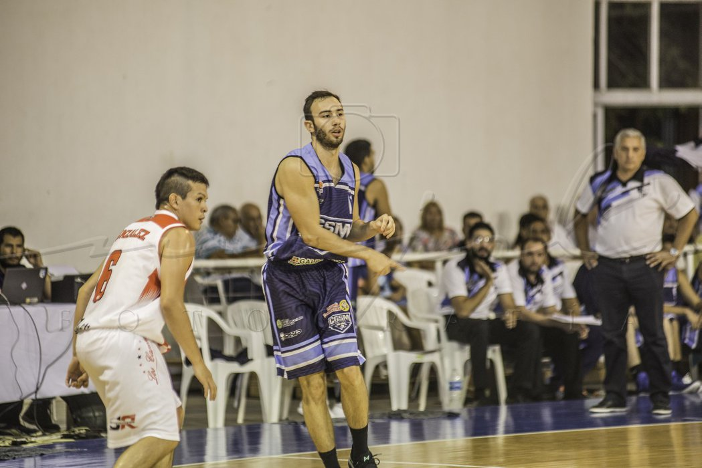
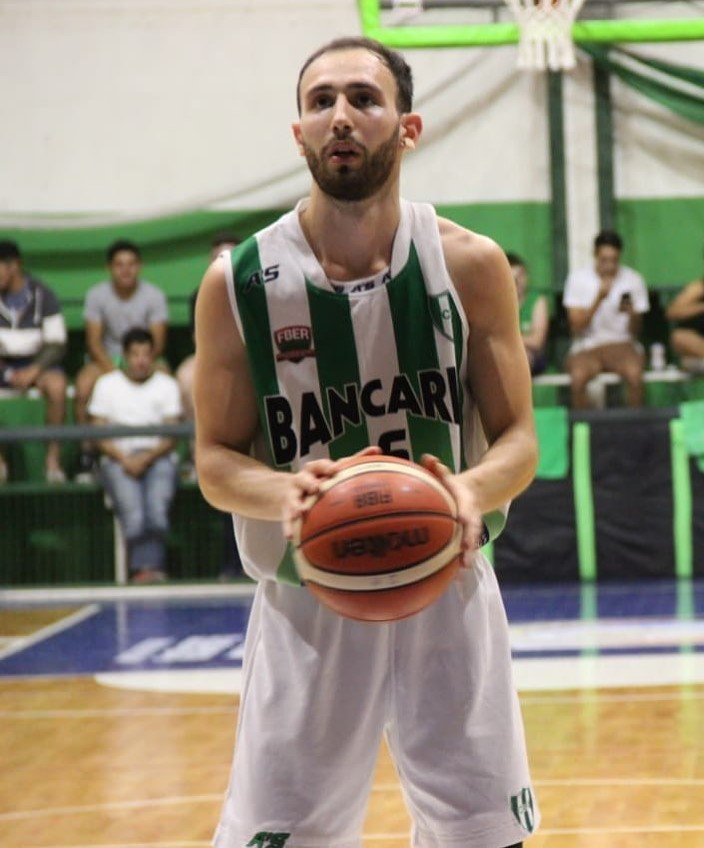
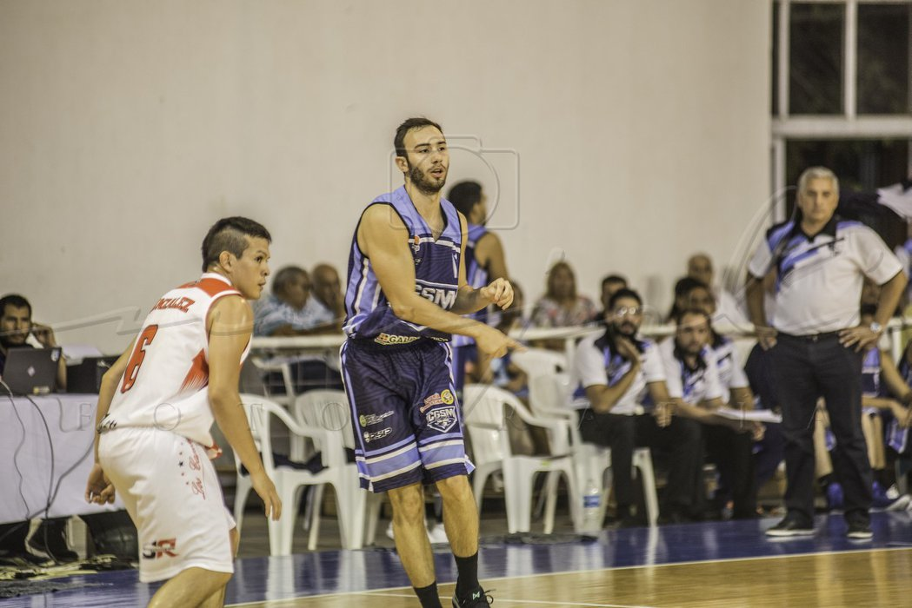
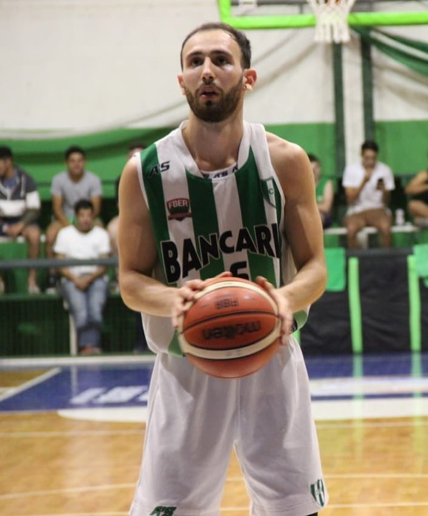
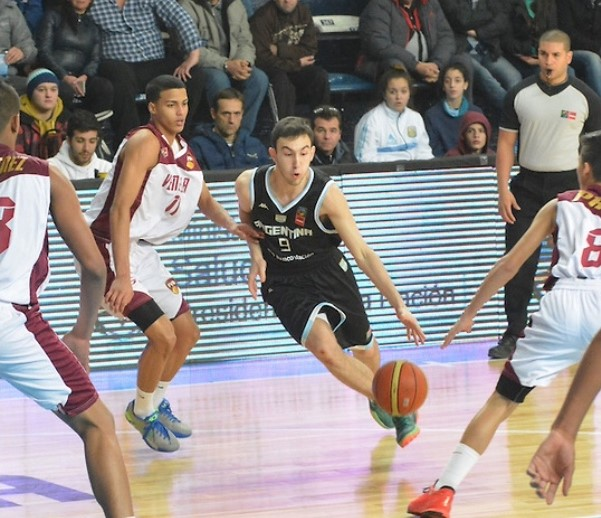
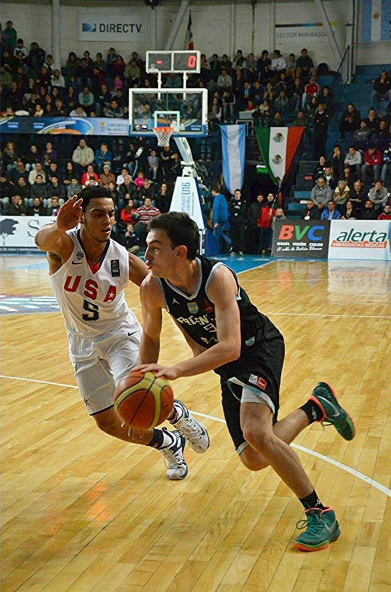
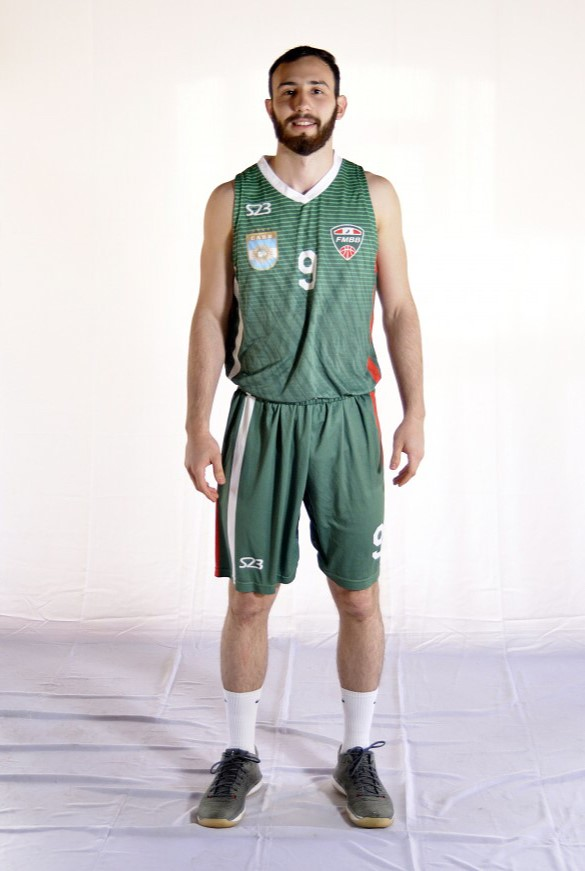

Clubes y equipos donde jugue:
- Tokio (Posadas, Misiones)
- Sionista (Parana, Entre Rios)
- San Martin (Corrientes, Corrientes)
- San Martin (Curuzu Cuatia, Corrientes)
- Bancario (Gualeguay)
- Somisa (San Nicolas de los Arroyos)
 



Provinciales y Nacionales de las que fui parte:
- Argentinos de Selecciones formativas en todas las categorias con la provincia de Misiones
- Argentino de Mayores 2016 y 2019
- Seleccion Argentina u15 y u16


